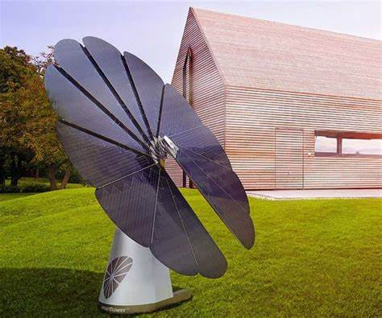

The Smartflower’s name comes from its design – the solar cells are
arranged on individual
“petals” that open at the beginning of each
day and look like a flower (hence, “solar flower”). After the sun
goes down,
the Smartflower’s petals fold up and a self-cleaning
process kicks in.
In addition to solar cells, the Smartflower system
contains a dual-axis tracker that makes it possible for its petals
to
follow the sun across the sky throughout the day. Thanks to this
tracking capability, the Smartflower can produce significantly
more electricity than a similarly-sized rooftop solar panel system – up to 40 percent
more, according to Smartflower’s website.
The 12-petal,194
square-foot structure comes with 2.5 kilowatts (kW) of electricity
production, which is roughly equivalent
to a 3.5 to 4 kW fixed rooftop
array.
